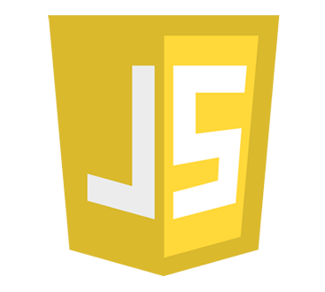
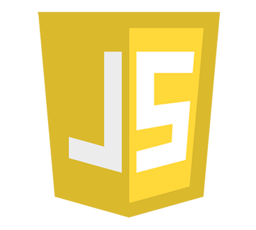
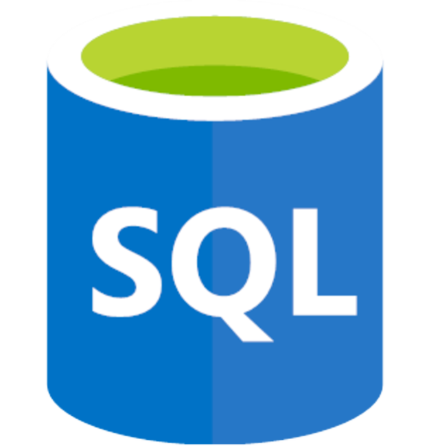
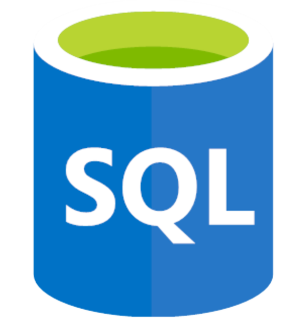

À propos
Bonjour, je m'appelle
Hugo Tcha.
Développeur Fullstack
J'ai 19 ans et je suis étudiant en licence Informatique à l'IUT de Bordeaux. Ce que j'aime le plus dans l'informatique, c'est le web et l'aspect du design. Passionné dans ces domaines, j'ai pu acquérir de nombreuses compétences et des connaissances.
Actuellement, je suis à la recherche d'un stage en informatique de 10 semaines du 8 avril au 14 juin 2024 afin de valider ma deuxième année en BUT informatique.
Mes compétences
HTML & CSS
J'ai travaillé avec des concepts tels que la sémantique HTML, les feuilles de style CSS et le modèle de boîte CSS. J'ai utilisé des outils tels que Bootstrap pour créer des mises en page et des styles réutilisables pour les sites web. J'ai travaillé sur un projet de site web responsive, en utilisant Bootstrap pour créer une mise en page réactive pour les différents appareils.
Java
J'ai travaillé avec des concepts tels que la programmation orientée objet et les collections. J'ai utilisé des outils tels que Netbeans et Visual Studio Code pour développer des projets en Java. J'ai travaillé sur un projet de système de gestion de bibliothèque en utilisant Java, JDBC pour la communication avec la base de données et Swing pour l'interface utilisateur graphique.
Python
J'ai travaillé avec des bibliothèques Python telles que Pandas, NumPy, Matplotlib, et TensorFlow, pour créer des projets variés. J'ai travaillé sur un projet de classification d'images en utilisant le réseau de neurones convolutifs de TensorFlow.
SQL
J'ai travaillé sur plusieurs projets qui impliquaient la création, la gestion et la manipulation de bases de données. J'ai travaillé sur un projet de système de gestion d'une bibliothèque universitaire, en utilisant MySQL pour stocker les informations sur les livres, les étudiants et les emprunts.
Mes projets

 


 

Not Enough Series
Le projet Not Enough Series a été réalisé en équipe au milieu de ma deuxième année de BUT informatique. L'objectif était de concevoir un site web sur la base d'un AlloCiné pour permettre aux utilisateurs de rechercher des séries mais aussi d'y ajouter des critiques. Le projet s'est déroulé en méthode agile (SCRUM) avec des itérations sur 3 jours.
Biosphère7
Le projet Biosphere7 est un jeu de plateau, il se joue sur un plateau de 14 cases de côté. Il y a 2 joueurs qui joue chacun leur tour dont chaqu'un des joueurs possède plusieurs possibilités d'actions. L'objectif de ce projet était de développer une IA capable de jouer à notre place en anticipant toutes les différentes actions possibles.

Odomo
Le projet Odomo avait pour but de programmer une petite station météorologique. Je suis parti d’une simple interface graphique jusqu' à arriver à conceptualiser et programmer les principales fonctions de celui-ci.
Installation de poste
Le projet d'installation de poste consistait à créer une machine virtuelle Linux en sachant gérer l'aspect multi-utilisateurs/différences de droit et en respectant les besoins utlisateurs.


Création d'une base de données
Le but de ce projet était de créer une base de données cohérente en suivant un cahier des charges spécifique. J'ai procédé à la conception et à la modélisation du schéma de la base de données en utilisant des outils tels que Win Design.